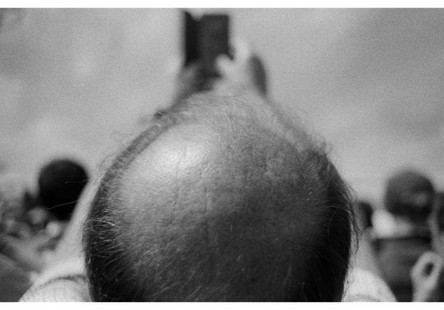

How Close Can You Get to a Stranger by Steven Piper
How Close Can You Get to a Stranger is an ongoing, evolving photographic series featuring a selection of images from a larger body of more than 2,000 photographs taken by Piper between 2018 and 2024 across Paris, Étretat, Bordeaux, Arcachon, and Biarritz.
How Close Can You Get to a Stranger is a continuous exploration of Piper’s recurring subject of choice – the stranger. To him, this proximity to the subject is an extension of his fascination with scales of intimacy. Arranged along a progressing gradient of proximity, far away landscapes sequentially become detailed portraits. Piper invites the viewer to perceive themselves through the eyes of a stranger, as if meeting for the first time – suspending the moment of first recognition as a practice of releasing judgements and an affirmation of an eternal gaze.
“To my subjects, you were once a passerby in my life, yet now I look at you, so intently”
Steven Piper is a Chicago-based commercial Photographer/Director. Steven has grown into a community leader in the world of photography, mentoring up-and-coming artists,hosting community events through his studio, and has become an ambassador for his local film lab. He aims to connect all of the city’s gifted artists and uplift the talent around him. This can be seen in one of Piper’s photo/interview series, Undertones, where he gives a platform for individuals to speak on what authentic representation looks like to them.
As a self-taught artist and photographer, Piper’s career started by capturing candid street photography while living in Paris, much like his idols, Henri Cartier-Bresson and Garry Winogrand. This soon developed into his longest ongoing project ‘How Close Can You Get to a Stranger’ where he captured the fleeting passerby, and now looks at them so intently.
As his passion developed he soon experienced a familiar crossroad amongst creatives- trying to find the balance between his artwork and commercial work.
With 5 years of advertising agency experience as an in-house photographer at FCB Chicago, Steven gained valuable experience into the industry and built a portfolio that would serve him well as he moved on to be an independent freelance photographer and director. With a range of personal and artistic interests, Steven’s resistance to niche down has created a body of work that appeals to a wide variety of commercial clients from Nike to Boeing and Topo Chico. If there was one main philosophy for Steven Piper’s career it would be to move freely within that sliding scale